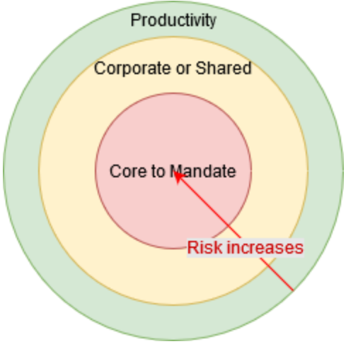

Adopt, Buy, and Build
This is a DRAFT strategy.
Table of Content
- Executive Summary
- Introduction
- Guiding Policy
- Coherent set of actions
- Measuring the Strategy’s success
- Appendix A - Business Case (Diagnostic)
- Appendix B - Traceability Matrix
- Appendix C - References
- Appendix D - Definitions
- Appendix E - Notes and Changelog
Executive Summary
Moving to the digital age requires improving IT’s responsiveness and promoting a shared accountability with ESDC stakeholders on the use of technology.
Yet, the current principle when acquiring IT Solutions is to “Buy what we can, Build what we must.” The assumed reasoning behind this overarching principle is that by purchasing an IT Solution from a third party, risks, responsibilities, and liabilities of its operations are handled by a company who has more resources and technical expertise to produce and maintain software.
This principle is leading to an oversimplified approach that doesn’t take into account that, as a government department, ESDC is subject to multiple and fast-paced changes, whether at the legal, political, organizational or technological levels, that impacts its ability to deliver on its mandate. Acquiring IT Solutions and Products can be accomplished using various methods and the acquisition is only a small part of the actual work required to be able to operate and maintain said technology. Adopting existing third-party solutions such as community-based open source software (OSS), or sometimes free software-as-a-service (SaaS), is an option often overlooked because of the belief that there is a lack of contractual support, warranties, indemnifications, etc. But those extra services are not part of the actual technology itself, they are services that the government representatives have become used to bundle as part of the rights to use the software via the contracting processes. These services can be acquired for community-based open source software as well, if required. But by conflating all these extra services and agreements together with the rights to use a software-based technology, the organization locks itself in long-term contractual obligations as well as with proprietary technologies and formats, making it very hard to course correct rapidly when required in the future.
Flexibility, interoperability and loose coupling of IT solutions are necessary because, once acquired, the technology needs to be integrated in the organization’s IT environment, configured to the needs of the users in a way that meets compliance and regulatory requirements, and continuously updated with patches and newest releases, etc. In addition to maintaining the technology itself, the acquiring organization needs to ensure its new and existing users are continuously trained, that its processes are properly adapted to the new capabilities and ways of working of the technology, that it has access to a sufficient pool of knowledgeable and dedicated personnel to maintain the technology, and that compliance to regulations and policies is maintained throughout the lifecycle of the IT Solution.
As such, it is critical for ESDC to ensure that core-to-mandate or complex IT Solutions remain highly flexible and adaptable to protect ESDC from the impacts of future changes while also minimizing the risks of those changes by adopting loosely coupled architectures and smaller sized work packages (see Target Solution Delivery Model for proposed ways to support such an approach).
This strategy proposes moving ESDC to the point where all stakeholders understand that IT Solutions are complex and investment decisions have to be taken with flexibility, interchangeability, and interoperability in mind throughout the entire lifecycle of an IT Solution, not only at the initial stage.
This strategy complements existing IT initiatives by introducing a guiding policy to set a direction as well as supports them with a plan of 9 actions involving stakeholders in IITB, SSPB (CDO), CFOB, SSC, TBS, and PSPC (see Coherent set of actions).
This strategy’s goal is to clarify the application of the GoC Mandatory Procedures for Enterprise Architecture Assessments and on Application Programming Interfaces when acquiring new or enhancing existing IT Solutions within ESDC IITB context.
More details in Appendix A.
Introduction
Purpose
To provide the Innovation, Information, and Technology Branch (IITB) with an overarching strategy in the application of the Government of Canada (GoC) Mandatory Procedures for Enterprise Architecture Assessments and the Mandatory Procedures on Application Programming Interfaces, in the context of acquiring new Information Technology (IT) Solutions and assessing enhancements to existing IT Solutions.
The strategy includes:
- A guiding policy, which serves to provide a direction to ESDC when applying the GoC Mandatory Procedures for Enterprise Architecture Assessments and on Application Programming Interfaces when acquiring new or enhancing existing IT Solutions in Employment and Social Development Canada (ESDC).
- A coherent set of actions (an action plan), which serve to operationalize the guiding policy.
The intent behind this strategy is to communicate a decision by the ESDC Chief Information Officer (CIO) (not yet approved) on a path forward (the Guiding Policy), and what investments are needed to operationalize that decision (the coherent set of actions).
Targeted Stakeholders
This strategy document is targeted to stakeholders involved in acquiring an IT Solution to help fulfill outcomes of an IT-enabled initiative as defined in a Project or Programme Business Case. More specifically, stakeholders involved in architecting IT solutions, defining technology standards, developing, delivering, operationalizing and maintaining IT Solutions (such as Enterprise Architecture, Enterprise Operations, etc.) and guiding committees such as the Architecture Review Committee (ARC) and the Enterprise Architecture Review Board (EARB). This includes both IITB and non-IITB stakeholders such as, but not limited to, Business Functions, Strategic and Service Policy Branch (SSPB), Chief Data Officer (CDO), Integrity Service Branch (ISB), Internal Audit Services Branch (IASB), and Shared-Services Canada (SSC). The list of stakeholders are listed in the Coherent set of actions and are expected to participate in the execution stage of this strategy necessary to operationalize the Guiding Policy.
The Guiding Policy, once operationalized, will target stakeholders involved when the need for an IT Solution is raised, as well as when the IT Solution is conceptualized, architected, developed, delivered, operationalized, and maintained. All ESDC personnel involved in the exploration of IT Solutions and in IT investment decisions are expected to adhere to this policy.
Guiding Policy
The following policy reflects the decision adopted by the CIO of ESDC (approval by CIO in principle, now requires endorsement at EARB) when assessing the most appropriate way of acquiring an IT solution, whether by adopting, buying or building it. Each policy statement is a declaration of that decision and has received the endorsement of its associated area of governance body (endorsements not yet obtained, see Coherent set of actions).
This policy becomes active when an ESDC initiative requires that an IT Solution be acquired, whether delivered by ESDC or by a third-party provider. Once active, all teams involved in the project, and the IT products involved in the IT Solution, must comply with this guiding policy.
This Guiding Policy has been prepared by taking into consideration alignment and compliance with existing policy instruments and does not replace them. Stakeholders are expected to still comply with existing policy instruments including, but not limited to:
- Government of Canada (GoC)
- Treasury Board of Canada Secretariat (TBS)
- Employment and Social Development Canada (ESDC)
- ESDC Policy on Project and Programme Management (PPPM)
- ESDC Information Management Policy (being drafted)
- ESDC Procurement Policies
- ESDC Security Policy (being drafted)
- ESDC Target Solution Delivery Model Strategy (draft in consultation)
- ESDC Data Strategy
Governance, Compliance, and Reporting
- IT Solutions are broken down into manageable parts (IT Products) in line with the ESDC Business Capability Model or the GoC Business Capability Model, whichever is most relevant.
- IT Solutions are assessed against the IT Solutions Risk Assessment Framework (to be created - see Coherent set of actions and read Managing the Risks of Acquiring of Software).
- IT Product / IT Solution maintenance and support may be done in-house or outsourced to a third-party vendor
- Outsourced maintenance and support may be provided by a third party different than the one providing the software licence.
Finance
- IT Solutions financial requirements are aligned to Product Management Framework (to be created - see Coherent set of actions)
- IT Solutions are assessed against the Total Cost of Ownership Framework (to be created - see Coherent set of actions)
Legal
- IT Solutions use the ESDC Software Legal Terms Guidance (to be created - see Coherent set of actions)
- IT Solutions and IT Products comply with the ESDC Open Source Software Management Framework when applicable.
Architecture
- IT Solutions and IT products loose coupling boundaries are at the intersection of value stream, value stage and business capability (ESDC Business Capability Model).
- Duplication of IT Solutions or IT Products is supported as long as they are for different business capabilities.
- Boundary of IT Solutions and IT Products are to be application capabilities so that they can enable business capabilities.
- Adoption of existing IT Solutions and IT Products, internal or external, are favoured over purchasing new ones or building them from the ground up, in line with their specific risk profile and total cost of ownership.
- IT Solutions and IT Products are risk assessed for lock-in situations with their specific risk assessment frameworks (to be created - see Coherent set of actions)
Coherent set of actions
| Policy Category | Action | Description | Lead | Stakeholders |
|---|---|---|---|---|
| Governance | Produce the EARB standard definition of IT Solutions | Define the IT Solution concept and scope for use and assessment by EARB and IITB teams. |
Architecture Teams
(Includes: Enterprise, Business, Data, Information, Application/Solution, Technical, IT Security, Security Architecture, and Cloud team) |
|
| Governance | Produce IT Solution Risk Assessment Framework |
Produce an IT Solution Risk Assessment Framework that favours and incentivizes flexible and interoperable IT solutions, service-oriented architecture, and reusable IT Products as components. This is required in order to support the organization in adapting itself to continuous fast-paced from various levels such as, but not limited to, political, legal, organizational, technological, geolocation, and social.
The Framework should also increase the level of IT Solutions using Open Standards over Proprietary ones and include two critical aspects: - 1) Doing the right things – delivering value and contributing to realization of departmental / GC outcomes - 2) Doing it the right way – aligning to the business and IT standards, guardrails, etc. ESDC Business Capability Model should be leveraged to help define IT Solution concept boundaries. The IT Solution Risk Assessment Framework should also take in the internal IT operations as one of the critical dimensions to consider when assessing the risk to the organization. |
Architecture Teams
(Includes: Enterprise, Business, Data, Information, Application/Solution, Technical, IT Security, Security Architecture, and Cloud team) |
|
| Governance | Produce IT Product Risk Assessment Framework |
Produce an IT Product Risk Assessment Framework that favours and incentivizes meeting the GC Architectural Standards.
ESDC Business Capability Model should be leveraged to help define IT Solution concept boundaries.
Key IT Products criteria to keep in mind: Favours: flexible, interchangeable, interoperable, reusable, scalable, and that can support self-serve for other teams to leverage (API based) Reduces: lock-in situations, whether contractual or technological, maintenance, customization, etc. The Framework should also increase the level of IT Products using Open Standards over Proprietary ones and include two critical aspects: - 1) Doing the right things – delivering value and contributing to realization of departmental / GC outcomes - 2) Doing it the right way – aligning to the business and IT standards, guardrails, etc. The IT Product Risk Assessment Framework should also take in the internal IT operations as one of the critical dimensions to consider when assessing the risk to the organization. |
Architecture Teams
(Includes: Enterprise, Business, Data, Information, Application/Solution, Technical, IT Security, Security Architecture, and Cloud team) |
|
| Governance | Review IITB Governance Structure and ToRs |
Review the current IITB Governance Structure and committees Terms of References to identify potential gaps and conflicts with the desired outcomes of this strategy.
Then, adjust governance and committees ToRs to be aligned with the desired outcomes. Note: This action is dependent on the completion of the action: "Produce IT Product Management Framework" to be developed under the leadership of IITB Finance. Note: This action is dependent on the completion of the action: "Produce an ESDC Software Legal Terms Guidance" to be developed under the leadership of Legal Services. |
Architecture Teams
(Includes: Enterprise, Business, Data, Information, Application/Solution, Technical, IT Security, Security Architecture, and Cloud team) |
|
| Governance | Seek ESDC OSS Framework endorsement from ESDC EARB |
Seek the ESDC OSS Framework endorsement from EARB.
Presentation already done at ARC and endorsement received. Continue to final governance approval. |
Technology Architecture |
|
| Governance | Produce IT Product Management Framework |
Produce an IT Product Management Framework, providing guidance on Operational vs. Capital Expense Financial management to support this management model in ESDC lead initiatives Leverage the Cloud CoE showback model to help explain use of services as part of an IT Solution and IT Products costing vs. project budgeting. |
IITB Finance |
|
| Finance | Produce Total Cost of Ownership Framework | Produce a Total Cost of Ownership Framework to provide guidance on assessing the full lifecycle costs of adopting IT Solutions (acquisition, operation and end-of-life) |
Architecture Teams
(Includes: Enterprise, Business, Data, Information, Application/Solution, Technical, IT Security, Security Architecture, and Cloud team) |
|
| Legal | Produce an ESDC Software Legal Terms Guidance | Produce an ESDC Software Legal Terms Guidance to support the adoption of OSS, help manage the legal complexities of Cloud subscriptions and support teams in assessing the shared risk and responsibilities. | Legal Services |
|
| Architectural | Realign Cloud Assessment Framework (CAF) with current Strategy | The CAF will need to take IT Solutions and IT Products risk assessment prior to evaluating the cloud fitness. | Cloud CoE |
|
Measuring the Strategy’s success
This Strategy’s success will be measured by comparing the following metrics against the key elements of the GoC Mandatory Procedures for Enterprise Architecture Assessments and on Application Programming Interfaces.
Enable organizational (ESDC) agility
- All new complex or core-to-mandate IT Solutions and IT Products have been acquired under conditions that enable ESDC to make course corrections and design changes in the future as required (i.e.: There are no service agreements, contractual or intellectual property clauses, or technical constraints limiting ESDC to change in parts or in whole the IT Solutions and IT Products.)
Accelerate acquisition of IT Solutions and Products (OSS, XaaS, etc.)
- Time to identify, assess, test, certify and approve a new external IT product for use in ESDC is less than 5 business days.
- Time to provision a standalone desktop IT product or Software as a Service access already in the APM is less than 30 minutes.
- Time to deploy code changes for an IT Solutions from check-in to release in production is less than 2 business days.
Increase reuse of existing IT Solutions and Products, internal and external
- Increased ratio of open source software solutions and products used in production compared to purchased or internally developed ones that are not shareable and reusable.
- ESDC developers and product owners contributes back to third-party OSS projects instead of internally maintaining changes.
- ESDC developers fork versions of third-party OSS only if the proposed changes are not integrated in the upstream version.
- When developing software:
- All dependencies are automatically scanned, documented and accounted for.
- A bill of material is automatically generated.
- Licence compliance policies are automatically applied.
Design cloud native Solutions
- All new IT Solutions and IT Products can technically be deployed on premise or on any pre-approved cloud service provider.
Loosely coupled Architecture
- All new IT Solutions and Products support the reuse of their business capabilities as a service via APIs.
- All enhancements to existing IT Solutions include as a deliverable an API for its capabilities.
Building
- Increased ratio of internally built projects released as OSS.
Applicable to all scenarios
- Increased ratio of decoupled IT Solutions and IT Products compared to baseline.
- Increased number of APIs discoverable, and accessible, for reuse throughout ESDC IT Solutions and IT Products.
- Increased number of IT Solutions and Products migrated to and operated on cloud environments (Cloud First Strategy).
- Increased speed and flexibility for software changes deployed to production for IT Solutions and IT Products (see Target Solution Delivery Model).
Appendix A - Business Case (Diagnostic)
Build vs Buy : Oversimplified Question
The creation of this strategy document stems from a request to help IITB decide whether it should prioritize buying an IT Solution over building one.
Looking for a default answer and approach to the question “Should an IT Solution be built or bought?” at the organizational level is a mental shortcut that bypasses GoC Mandatory Procedures for Enterprise Architecture Assessments and on Application Programming Interfaces as well as the concepts of solution architecture, where the relevant experts of the organization, both from business lines, finance, security, information technology, etc., work together to design a solution while leveraging various resources, including people, tools, processes, and rules.
An IT solution is by default built, whether by a single person, multiple teams or by a third party, and it will most often consist in an assemblage of many components, known as IT Products in this document.
The model below explains, in a visual manner, these relationships.
![An UML diagram representing the hierarchical relation of an IT Solution and its components.
There are 5 rectangles on the diagram connected by relationship lines.
The first rectangle to the left is titled "IT Solution".
It is connected to a second rectangle, titled "IT Product", located on its right by a relationship line; the end of the line starting from the "IT Solution" rectangle has a "1" and the other end has "1...*" and a small white diamond.
The "IT Product" rectangle is connected to a third rectangle, titled "Software", located on its right by a relationship line; the end of the line starting from the "IT Product" rectangle has a "1" and the other end has a "1...*" and a small white diamond.
The "Software" rectangle has two relationships connections.
The first connection is to a rectangle, titled "Configuration", located below the "Software" rectangle; the end of the line starting from the "Software" rectangle has a "1" and the other end has a "1...*" and a small black diamond.
The second connection is to another rectangle, titled "Infrastructure", located to the right of the "Software" rectangle; the end of the line starting from the "Software" rectangle has a "1" and the other end has a "1...*" and a small white diamond.
There is one last connection, linking the "Infrastructure" and "Configuration" rectangles; the end of the line starting from the "Infrastructure" rectangle has a "1" and the other end has a "1...*" and a small black diamond.](assets/images/strategy-build-buy-uml-it-solution.png)
Description of the model:
- An IT Solution is comprised of 1 or many IT component(s)
- An IT component is comprised of 1 or many software which can be either an open source software, a service subscription, a third-party COTS or a custom-built one.
- A Software is deployed on an infrastructure that can either be on premise (SSC Data Centres), on a public cloud provider’s infrastructure (as a IaaS, PaaS, or SaaS model) or as a hybrid version that combines both on premise and public cloud provider.
As such, the questions to ask are more akin to:
- “What software component(s) are required to enable a given capability?”;
- “For each of those component(s), is the best course of action adopting an open source component, purchasing the rights to use a commercial product or service, or building it internally?”; and
- “How much organizational risk is the organization willing to delegate to a third party for a product or service (e.g., when the product/service roadmap is not under the organization’s control?)”.
In large and complex solutions, these questions should not only be asked at the solution level but also for each component of said solution, taking into account multiple factors and criteria that will be explored below.
Even when an IT Solution is said to be bought, it is never a plug-and-play situation, whether it consists of COTS or SaaS. The organization’s IT teams need to acquire, configure and adapt the purchased IT Products to fit with the rest of the organization’s IT infrastructure, services, and rules.
Maintenance of IT Solutions should thus be considered separately from the acquired solution as it may require work from internal staff as well as the involvement of third-party personnel, whether it is a vendor or a community in the case of an open source software.
Contextual Factors
It is important to consider various contextual factors when making decisions, e.g.:
- Does the organization have the skill set and capacity to architect, design, build and operate this solution?
- For a given option, what will be the required profiles of resources? e.g., building internally will need strong capacity in development and project management, while buying is more dependent on procurement, legal and vendor management. One option over the other does not necessarily equate to a grow or reduction in staff, sometimes it simply means an exchange in internal skills.
- How can the decision align with the organization’s business strategies? e.g., is the direction to further grow internal capacity or outsource some new initiatives to third party integrators? Is lead time for delivery of the solution an important factor?
However, this does not mean that the questions of the precedent section should not be asked subsequently. It is possible that the organization does not possess the staff with the required skill set or sufficient capacity to deliver internally the IT Solution at a specific point in time. When that is the case, proper talent acquisition, retention, and training efforts are required.
Leveraging external resources is a valuable option, as long as the organization ensures that internal capacity and training is planned for. And, any solution designed, developed, and delivered by a third party should still be abiding by the same principles required for solutions built within ESDC so that once it is operationalized, the organization retains a high level of control and flexibility in maintaining and enhancing the solution while limiting its lock-in situations.
As such, if the organization is not in a position to design, build and operate the solution itself, the third party putting the solution together for the benefit of ESDC should have clear directives to align with our own architectural principles.
Additional Considerations
- How much control is preferred over the frequency of upgrades or technology obsolescence of an option?
- Do the components of a given option adhere to the organization’s technology standards?
- What level of maturity is sought for a given component?
Managing the Risks related to Acquiring Software
The Strategy looks at managing the risks related to acquiring software over following dogmatic rules to purchase or build software (e.g. “SaaS first” does not mean SaaS always, “Buy what we can” does not mean buying because it’s available). Instead, the Strategy will use such policy instruments as intended by the policy author and its authority to inform decisions for long-term sustainability and user needs.
The risk management for acquiring software is based on the following formula:
Risk = Probability of change * impact
Where
Risk is the level of injury to ESDC (High, Medium, Low).
Probability of change is the probability that a change will happen in the future (e.g., new feature need, new legislation changes processes or rules, version upgrade, customization, integration, vendor product discontinuity, vendor product roadmap change, etc.)
Impact is the impact on ESDC that the change will have, informed by the following:
- Financial lost
- Reputation lost
- Time lost (responsiveness)
- Legal implications

Another link could be made to assess the risk in relation to the probability of change: the complexity of a solution. In other words, the less static the needs are then the higher the chances are that unaccounted changes will become requirements in the future, thus increasing the risks to the organization. Large IT projects are often subject to changes in requirements, such as changes in legislation and unknown requirements at the onset of the project. In addition to the complexity of the systems themselves, this means that large projects present higher risk to the organization not being able to deliver on its mandate.
Based on the risk level, ESDC will adjust its decisions around acquiring software and services (build, buy, or adopt) as well as how the maintenance of those IT Solutions are handled.
Risk levels are heavily influenced by the capability being enabled by software. The following diagram helps visualize how this risk level varies according with the type of capabilities:

Productivity capabilities, such as collaboration tools, image editing and word processing present low risks to ESDC due to their commodity in the market, low change probability, and being at the perimeter of ESDC’s core mandate reducing their impact to the organization.
Corporate or Shared capabilities, such as Financial Systems, HR Systems, Messaging Bus, Information management and Authentication Systems start increasing risks to ESDC due to their larger footprint in the organization, greater integration requirements, as well as their larger financial and time impacts affecting end users and taxpayers.
Core capabilities, such as Employment Insurance, Pension, and Old Age Security are what differentiates ESDC from the large majority of institutions in the world. Software options in this niche market are scarce due to the unique mandate of ESDC and even if there were commercial offerings, the commoditized nature of these solutions means that ESDC has limited influence on the upstream version of the software, thus increasing the risks to the organization by locking itself with a unique solution and vendor. Change probability is high as those capabilities change as much as regulation changes. The impact of such changes has a ripple effect on the whole organization and affects ESDC’s reputation to keep up with citizen demands while maintaining its fiduciary responsibility.
As well, other types of risks should be taken into account, e.g., related to:
- Implementation – Unexpected delays, technology immaturity, user resistance to adopt the new system, etc.
- Intellectual Property – Compliance with licencing requirements, inability to make specific business or technological decisions due to licencing constraints, etc.
- Third Party Viability – Third party going out of business, change in roadmap direction subsequent to a new ownership, etc.
Evaluating the Total Cost of Ownership
An assessment of the estimated Total Cost of Ownership of potential suitable options should be done to help guide acquisition decision-making. It is necessary to quantify and compare costs and it provides an opportunity to identify, explore and challenge any assumptions and biases.
Here are some cost items that should be considered:
Acquisition
- Upfront evaluation
- Decision and negotiation
- Licenses
- Infrastructure (virtual or physical)
- Customization, integration and development
- Migration (data and users)
- Training
Operation
- Use
- Maintenance (e.g., Helpdesk, Service and software engineering, vendor relations)
- Upgrades
- Support services
- Infrastructure
- Scaling
- Customization, integration and development
- Depreciation
End of Life
- Disposal
- Migration (data and users)
Other
- Opportunity or compliance (e.g., missing a market opportunity, not complying with regulations, decreased customer satisfaction)
- Costs incurred with another party to ensure the ability to meet Service Level Agreement (SLA) targets
- Unplanned (e.g., unanticipated expenditure through compliance auditing and under-provisioning of licences)
It may not be possible to calculate exact figures for all of the items, and an assessment of high/medium/low may be more realistic. This should not pose a problem so long as the same criteria are used to evaluate all options within an acquisition.
But remember, Value for Money is not solely concerned with the financial cost of a solution. The cheaper option may not always be the better one.
Conclusion
With the exception of well-established software for generic or peripheral needs of the department, there is little distinction between build vs buy. The question becomes whether the organization could and should build it itself, or have someone else build it. Even traditional services delivered through SaaS, such as email, require considerable configuration (build) for their implementation1 and continuous maintenance. This strategy is intended to return control of implementation of services back to the department thereby permitting increased alignment with the Government of Canada direction, and increase the quality, and rate by which, digital services are delivered to Canadians. The intent is to replace dated approaches to IT solutions delivery in favour of practices aligned with industry best practice in order to promote the department’s digital transformation and keep pace with the rising expectations of Canadian citizens with respect to digital services.
Appendix B - Traceability Matrix
The following traceability matrix is used to show alignment with various strategies, plans, and policy instruments already in progress.
| Strategy element | Aligns with |
|---|---|
| Governance, Compliance, and Reporting |
GoC Digital Standards/design with users GoC Digital Standards/iterate and improve frequently GoC Architecture Standards/Business Architecture GoC Architecture Standards/Security Architecture & Privacy GoC DOSP/Chapter 1 user-centred GoC DOSP/Chapter 6 digital governance TB Policy on Service and Digital/4.2 client-centric service TB Directive on Service and Digital/Strategic IT Management IITB Way Forward/1. Adjust IITB leadership IITB Way Forward/6a. Strengthen IM/IT Strategy IITB Way Forward/6f. Formalize requirements mgt framework IT Plan/Section II/Foundational Departmental Value Stream Model Departmental Business Capability Model Departmental Application Capability Model ESDC EA Architectural Principles ESDC Technology Standards (aka Technical Bricks) |
| Finance |
GoC Digital Standards/iterate and improve frequently GoC DOSP/Chapter 4.3 Procurement modernization TB Policy on Service and Digital/4.2 client-centric service TB Policy on Service and Digital/Supporting workforce capacity and capability IITB Way Forward/6d. Separate programme/project IITB Way Forward/8. Technical debt strategy |
| Architecture |
Strategy Map/Lean Architecture GoC Digital Standards/iterate and improve frequently GoC Architecture Standards/Information Architecture GoC Architecture Standards/Application Architecture GoC Architecture Standards/Security Architecture & Privacy GoC DOSP/Chapter 3.2 Any-platform, any-device GoC DOSP/Chapter 4.3 Procurement modernization GoC DOSP/Chapter 4.4 IT Modernization IITB Way Forward/6a. Strengthen Enterprise Architecture practice IITB Way Forward/6e. Enhance app development |
| Product Management |
Strategy Map/Cross Functional Strategy Map/Continuous Improvement GoC Digital Standards/iterate and improve frequently GoC Digital Standards/address security and privacy risks GoC Digital Standards/build accessibility from the start GoC Architecture Standards/Business Architecture GoC Architecture Standards/Security Architecture & Privacy GoC DOSP/Chapter 2.3 Accessibility and inclusion TB Policy on Service and Digital/Supporting workforce capacity and capability IITB Way Forward/6d. Separate programme/project IITB Way Forward/6e. Enhance app development |
Appendix C - References
Appendix D - Definitions
- IT Solution
- An IT Solution is the combination of one or many IT Products, which are in turn comprised of one or many Software and/or Hardware, acquired through many possible ways: built internally, acquired as open source, provided by a company as an executable application under a proprietary licence, as a standalone device, or used as a service through a subscription model. (See the following standard IITB definition.)
- IT Product
- The combination of software, infrastructure, and their configuration. An IT Product is akin to an “application” as defined by the Application Portfolio Management (APM) program. An IT Product may have one or many software (e.g., COTS, open source libraries, open source software, custom-built software). Each of those software are deployed in one or many infrastructure (on premise, on the public cloud, or a combination of the two making it a hybrid deployment). For the scope of this Strategy, Operating Systems are NOT defined as IT products. Therefore should an IT Product depend on an Operating System to run in production, it is in compliance with this Guiding Policy.
- Adopt
- A process by which the department acquires an IT Product that is made available and is in used at least once outside the organization. It may consist of Open Source Software, proprietary software, and XaaS, used as is, without code customization. (the inspiration for this definition is derived from the US Department of Defense OSS FAQ where they define OSS as COTS.)
- Build
- A process whereby the department produces, or contracts a third party to produce, custom code that is not part of any existing IT Product available and used outside the organization. When contracted for, the terms and conditions contracted for may vary and impact the ability of the department to alter the code in the future.
- Buy
- A process by which the department exchanges money for one or many of the following
-
- Rights to use an IT Product under certain terms and conditions
-
- Additional features not provided in IT Products by default
-
- Services, including but not limited to: infrastructure as a service, platform as a service, software as a service, security patches, features enhancements, training, IT Product integration, professional advice, etc.
-
- Warranties and liabilities
- Complex IT Solutions
- A complex IT Solution is when not all requirements are known or key elements may only be found later by experimentation and user research.
- Open Source Software
- Software with its source code made available with a licence in which the copyright holder provides the rights to study, change, and distribute the software to anyone and for any purpose. The name used by the Open Source Initiative (OSI). Open source software is defined in the Open Source Definition by ten criteria.
- Open standards
- Open standards are a set of rules designed to do a specific job in technology. Open standards refer to file formats, protocols and application interfaces that can be implemented by everyone (in open source and proprietary software alike) since the specifications are available at no cost, and since their development and standardization is open and transparent. This standardization work is done by specialized agencies that are usually either government agencies or organizations created by professionals from a given industry sector. Examples of such organizations include the Internet Engineering Task Force (IETF), the International Organization for Standardization (ISO) and the Organization for the Advancement of Structured Information Standards (OASIS).
- Closed COTS
- Commercial Off-The-Self (COTS) software where the source code for said product is not open source.
- Open COTS
- Commercial Off-The-Self (COTS) software where the source code for said product is open source.
Appendix E - Notes and Changelog
Notes
Note 1: This page will link to internal ESDC documents, which are unfortunately only accessible within ESDC corporate network.
Note 2: Assumptions when reading this document
- The decision to invest time and resources for an IT solution has already been taken but it has not been decided whether it will be adopted, built or bought.
- This is not a software request (e.g.: I want to use this SaaS)
- A comprehensive enterprise view of services is available for all teams, business and IT alike
- Service Oriented Architecture is well understood and applied across IITB
Changelog
| Version | Date of Change | Change Description |
|---|---|---|
| 0.01 | 2020-06-22 | First Draft, moved from working document to web page |
| 0.02 | 2020-06-30 | Created list of guiding policy rules, Removed duplicate content, Created separate documents for context, Cleaned up definitions |
| 0.03 | 2020-07-06 | Simplify set of guiding policy rules |
| 0.04 | 2020-07-17 | Add Assumptions to notes, clarify Appendix A - Business Case, Dispose of first round of comments |
| 0.05 | 2020-07-29 | Dispose v0.04 feedback, simplify rules, address duplication of content, realign strategy with Enterprise Architecture Mandatory Procedures, Clarify lead vs stakeholder on actions |
| 0.06 | 2020-07-29 | Dispose v0.05 feedback from Enterprise Architecture teams, clarify guiding policies, add actions items |
-
Pia Andrews, in What improving IT procurement in the public sector looks like: navigating, balancing, and initiating procurement conversations to avoid sprinting off cliffs, writes that many COTS implementations “require significant customization, configuration, integration, or modifications to actually implement a COTS product into production.” ↩